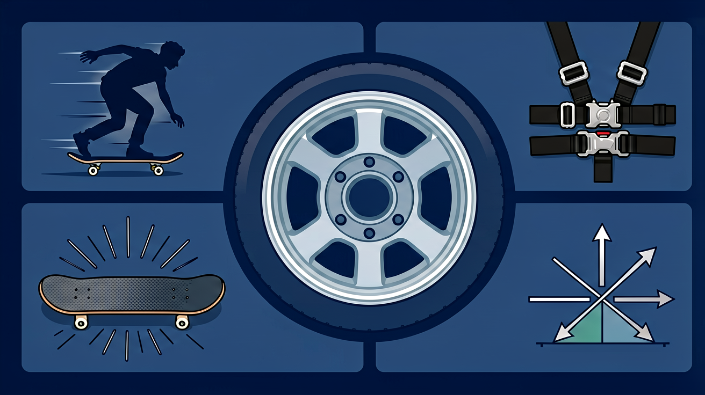
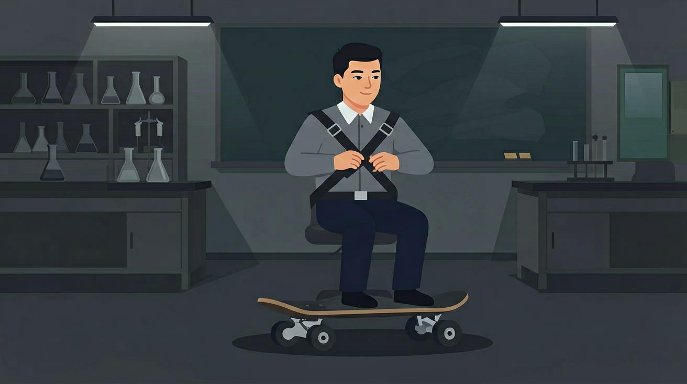
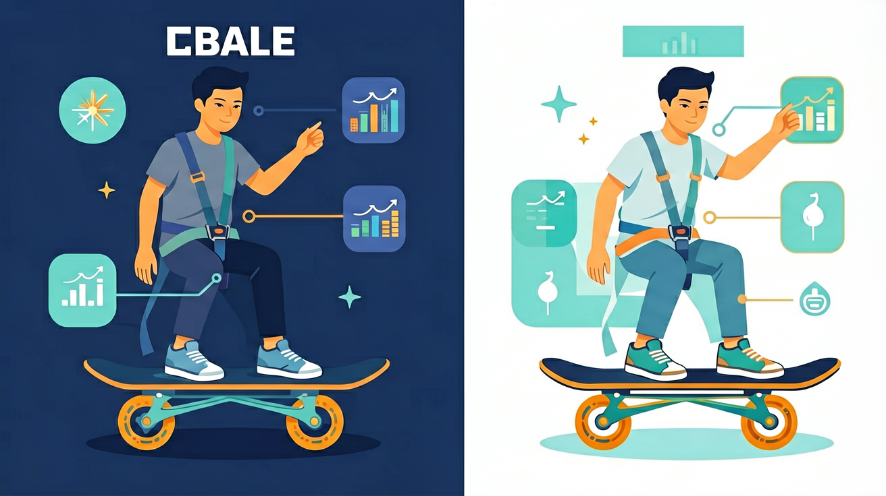

牛顿第一定律：物体不受力或受平衡力时保持静止或匀速直线运动。惯性是物体保持运动状态的性质。
滑板会滑行。
以为有力才有运动；惯性当力。
定律→惯性→平衡力。
牛顿第一定律认为不受力时物体
保持静止或匀速直线
固有属性
等效于不受力

牛顿第一定律指出：一切物体在不受力时保持静止或匀速直线运动，物体具有保持运动状态的惯性，惯性大小只由质量决定。力不是维持运动的原因，而是改变运动状态的原因。物体处于静止或匀速直线运动时，受到的是一对平衡力（等大、反向、共线、同物体）。
关于惯性，正确的是？

💡 调节摩擦力，观察撤力后的滑动，体会惯性。
外链：https://phet.colorado.edu/sims/html/forces-and-motion-basics/latest/forces-and-motion-basics_zh_CN.html
惯性是
急刹车人前倾因为
力的作用是
平衡力作用下物体
系安全带主要为了
用三句话说明牛顿第一定律最重要的一条规律，并举一例。
勾选你已掌握的条目。
❓ 为什么急刹车时人会往前冲？
❓ 静止的物体真的不受力吗？
❓ 怎么判断物体是不是在做匀速直线运动？
学完这一课，这些问题你都能自信地回答。
🎯 能说出牛顿第一定律的内容及成立条件
🎯 能根据受力分析判断物体运动状态是否改变
🎯 能用二力平衡条件解释生活中的惯性现象
✅ 强调力是改变运动状态的原因，不是维持运动的原因
💡 受日常生活经验影响（如不推车会停下）
✅ 明确惯性是物体固有属性，不是外界施加的力
💡 混淆'惯性'与'惯性力'概念
口诀：不受力或平衡力，匀速静止不变异
类比：就像突然停下的公交车，站着的人会往前倾
（中考题）如图小车从斜面滑下，在毛巾表面运动距离最短，说明：
直升机悬停时，升力与重力关系是：
（迁移题）宇航员在空间站推舱壁后会匀速飘走，说明：
And：学生经历过急刹车时身体前倾
But：不明白为什么松开油门车不会立刻停下
Therefore：通过实验感受惯性本质
物体保持原有运动状态的性质叫惯性。比如用尺子快速击打叠在一起的硬币，最下面的硬币被抽出时，上面的硬币会因为惯性保持静止状态而垂直落在桌面上（演示时可叠放5枚一元硬币，击打速度需达到0.5m/s以上）。牛顿第一定律说明：当合外力为零时，运动的物体会保持匀速直线运动。
🌍 地铁突然启动时，站着的人会往后倒。这是因为脚随车厢运动，而上身由于惯性保持静止。实测地铁启动加速度约0.8m/s²，相当于被轻轻推了一下的感觉。
公交车突然右转时，乘客会向哪个方向倾斜？
And：知道静止的物体会保持静止
But：不理解书桌为什么能同时承受书包和手的压力
Therefore：建立二力平衡的量化认知
当两个力大小相等、方向相反、作用在同一直线上时，物体处于平衡状态。例如用弹簧秤拉木块（质量500g），当示数稳定在4.9N时（g取9.8N/kg），说明桌面对木块的摩擦力也正好是4.9N。此时木块受到的合外力为零，符合牛顿第一定律的平衡条件。
🌍 电梯匀速上升时，体重秤示数不变。实测60kg的人所受支持力约588N，与重力平衡。若电梯加速上升1m/s²，支持力会增大到648N。
吊灯静止时，电线拉力20N，说明什么？
And：能识别简单平衡状态
But：不会通过改变变量验证定律
Therefore：培养控制变量的实验思维
通过斜面小车实验验证：①同一小车从不同高度（如30cm/60cm）滑下，水平面阻力相同时，初速度越大滑行越远；②相同高度释放时，在毛巾（摩擦系数0.6）、木板（0.2）、玻璃（0.05）上滑行距离依次增加。数据证明：阻力越小，物体越接近匀速直线运动状态。
🌍 冰壶运动员擦冰能减少摩擦系数（从0.015降到0.008），使冰壶多滑行3-5米。比赛用冰壶质量约20kg，初速度通常4m/s。
要增大实验小车滑行距离，可以？
点击节点跳转到对应章节；可切换布局。